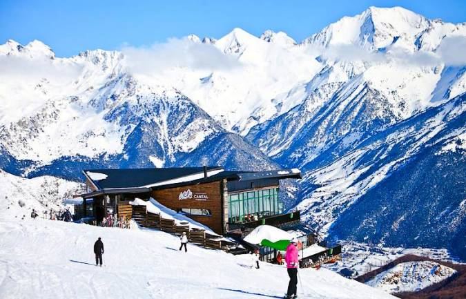

Estación de Esquí de Panticosa
La estación de esquí de Panticosa se sitúa en el valle de Tena, en el Pirineo aragonés. Destaca por su carácter familiar y su entorno natural, ofreciendo una experiencia de esquí rodeada de impresionantes paisajes de montaña. Su altitud máxima es de 2,200 metros, lo que asegura nieve de buena calidad durante gran parte de la temporada.
Panticosa cuenta con una amplia oferta de pistas para todos los niveles, sumando un total de 39 km esquiables repartidos en más de 40 pistas. La estación dispone de modernos remontes y una variada infraestructura para disfrutar al máximo de la experiencia de esquí.
Los visitantes pueden deleitarse con las vistas del entorno montañoso, incluyendo picos emblemáticos como el Garmo Negro y el Argualas. La estación también cuenta con un área dedicada al freestyle y snowpark, así como con opciones de senderismo y actividades alternativas para quienes prefieren otras experiencias.
Con un ambiente acogedor y la hospitalidad característica de la región aragonesa, Panticosa es un destino ideal para familias y esquiadores que buscan combinar deporte y naturaleza en un entorno espectacular.
